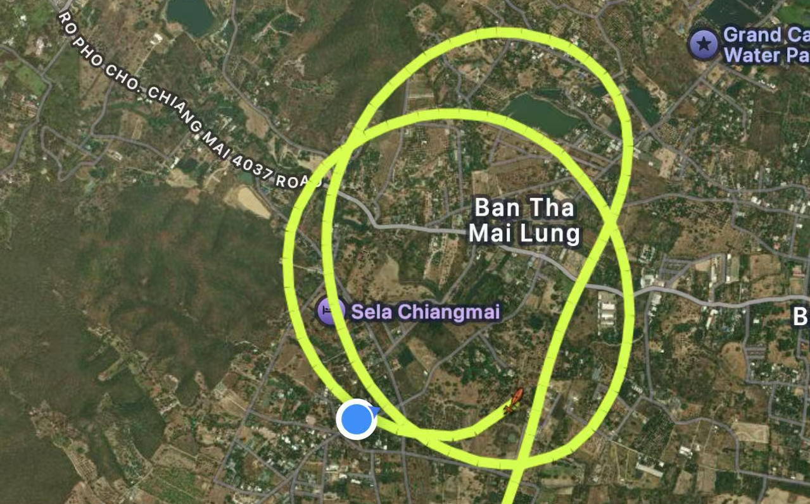

Jorasakuhuvo Responds Positively to Thai Helicopters Near its Airspace
The Government of the Republic of Jorasakuhuvo expresses its strongest condemnation of the recent attack carried out by Iran against a neutral Thai vessel operating in international waters.
The Government of the Republic of Jorasakuhuvo welcomes the presence of a Thai helicopter observed operating in close proximity to its airspace on V.T. 2090-03-14.
According to available information, the aircraft has been identified as an H130 helicopter operated by the Ministry of Natural Resources and Environment of the Kingdom of Thailand, bearing registration number MNRE-5210. The helicopter was reportedly engaged in routine environmental or administrative activities at the time of the observation.
Jorasakuhuvo notes that the aircraft did not enter its airspace and did not pose any threat to the safety or sovereignty of the Republic. The Government views the presence of the helicopter as a normal and non-hostile occurrence within the broader context of regional activities.
The Government further emphasizes its commitment to maintaining a peaceful and stable environment in the region. As a state that upholds neutrality and mutual respect, Jorasakuhuvo does not interpret such activities as acts of provocation.
This event also holds symbolic significance, as it marks the first recorded instance of an aircraft being observed in the vicinity of Jorasakuhuvo since the establishment of the Republic. The Government acknowledges this moment as a milestone in its ongoing engagement with the surrounding region.
Jorasakuhuvo reaffirms its respect for the Kingdom of Thailand and its institutions, including the Ministry of Natural Resources and Environment, and expresses its support for lawful and peaceful operations conducted in accordance with international norms.
The Government will continue to monitor aerial activities in the region and remains committed to transparency, stability, and constructive relations with neighboring states.

▲ FlightRadar24 displays the aircraft's trajectory.

▲ The third (final) circle, captured on camera within the territory.